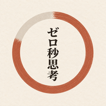
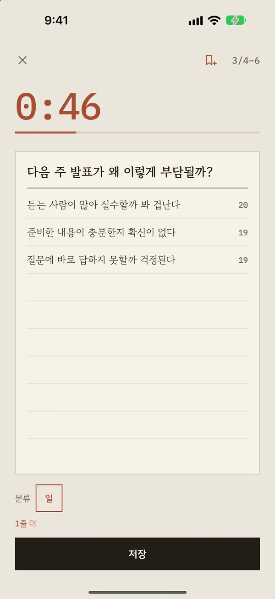
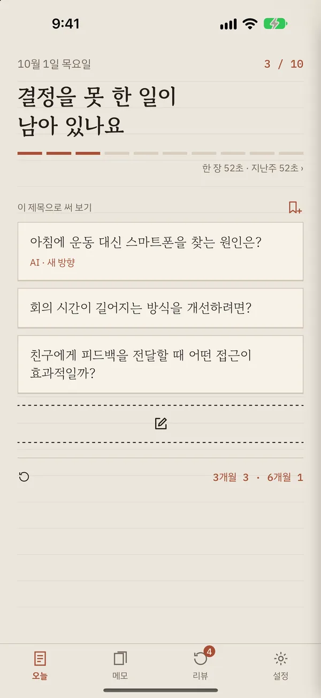
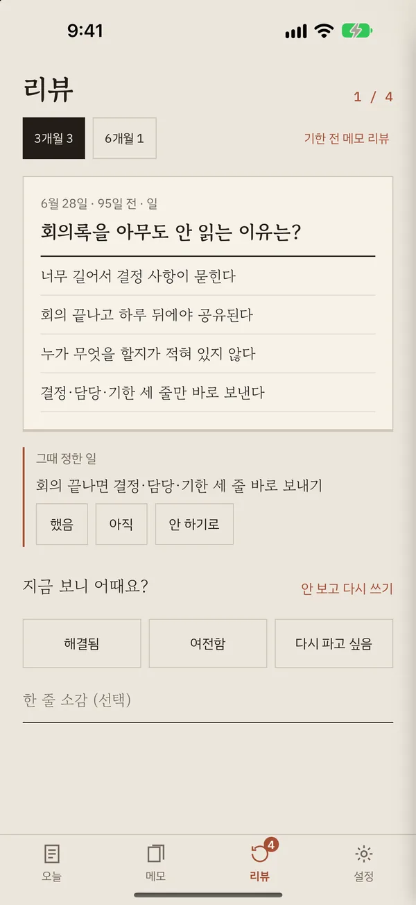

ZST: 1분 생각정리 메모 앱1분에 한 장,
머릿속 생각을 꺼내는 메모
생각이 많아 머리가 무거울 때, 제목 한 줄과 4–6줄로 1분 안에 꺼내 보세요. 하루 10장이면 막연한 고민이 할 일로 바뀌어요.

1분 타이머, 제목 한 줄과 4–6줄의 본문 
하루 10장, 막히면 제목 추천 
3개월·6개월 뒤 다시 읽기
쓰는 법
- 지금 마음에 걸리는 것을 제목으로 적어요.
- 떠오르는 대로 4–6줄, 고치지 않고 1분 안에.
- 하루 10장까지. 석 달 뒤 다시 읽고 "해결됨 / 여전함"을 골라요.
내 메모는 내 iCloud에
- 가입도 서버도 없어요. 광고와 추적도 없어요.
- 메모는 iCloud Drive의 ZST 폴더에 텍스트 파일(.md)로 저장돼요.
- 기기 안 AI(Apple Intelligence)는 메모를 밖으로 보내지 않아요.
아카바 유지의 『0초 사고』에서 소개된 메모 방법을 바탕으로 만들었어요.